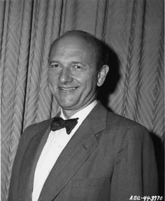
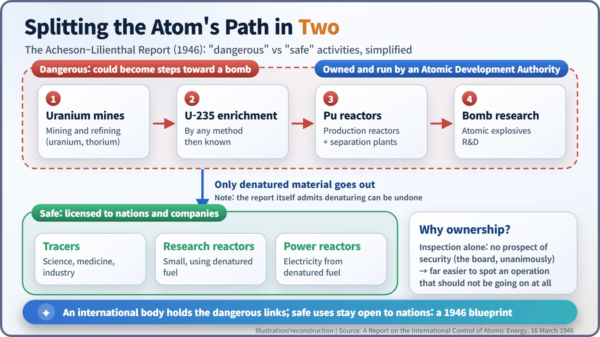
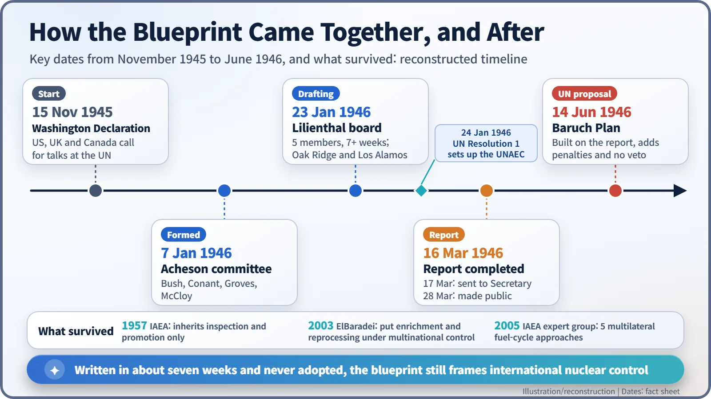
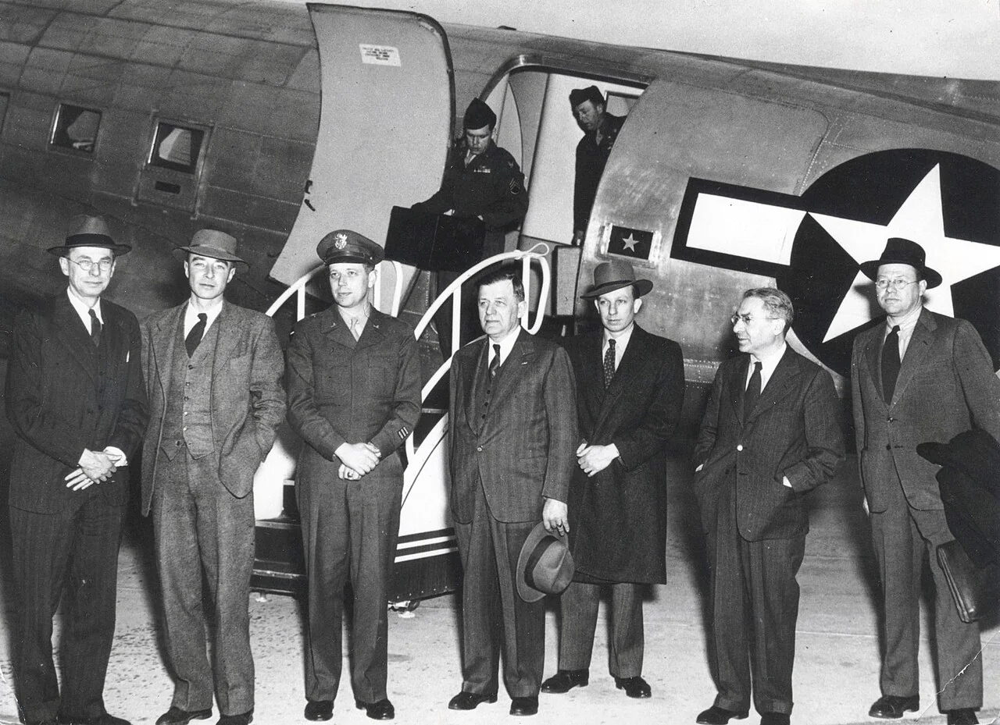

Nuclear History · 128
What If the World Owned the Uranium Mines? — The Acheson–Lilienthal Report (1946)
Seven weeks of work, a split between dangerous and safe atomic activities, and a blueprint for international ownership that was never adopted.
In March 1946 a five-member board chaired by David E. Lilienthal, with J. Robert Oppenheimer writing much of the text, proposed that an international Atomic Development Authority should own and run every "dangerous" step toward the bomb, from uranium mines to plutonium plants, while "safe" uses were licensed to nations. The plan was meant to be gradual, and it was never adopted, but its question still shapes international nuclear control.
A world where the mines belong to everyone
Picture a world in which every uranium mine on Earth belongs not to any one country but to an international body. That body also runs the enrichment plants and the reactors that make plutonium. A nation that wants a research reactor, or radioactive material for its hospitals, applies for a licence. It sounds like science fiction, yet in March 1946 a blueprint for exactly this world was sitting on a desk at the US State Department. Its formal title was A Report on the International Control of Atomic Energy. Almost everyone calls it the Acheson–Lilienthal Report. [1]
The worry of a one-bomb country
In early 1946 only the United States had the atomic bomb. Scientists knew the monopoly would not last. On 15 November 1945 the leaders of the United States, Britain and Canada declared that atomic energy control should be taken up at the United Nations, and at the Moscow conference of foreign ministers in December the Soviet Union agreed. On 24 January 1946 the UN General Assembly's very first resolution created the UN Atomic Energy Commission. [2]
The question was what Washington would bring to the table. On 7 January 1946 Secretary of State James F. Byrnes set up a committee chaired by Under Secretary Dean Acheson (1893–1971). Its members were Vannevar Bush, Harvard president James B. Conant, General Leslie R. Groves and John J. McCloy. [3]
Five people, seven weeks
The actual plan was drafted by a Board of Consultants. Its chairman was David E. Lilienthal (1899–1981), head of the Tennessee Valley Authority, the giant public power and river-development agency. With him sat Chester I. Barnard, president of the New Jersey Bell Telephone Company; Charles A. Thomas of Monsanto Chemical; Harry A. Winne, a General Electric vice-president; and the physicist J. Robert Oppenheimer (1904–1967). One scientist, then, and four people who ran companies and public works.

The board first met on 23 January. In the report's own words, for "more than seven weeks since that time we devoted virtually our entire time and energies" to the task, including visits to the plants at Oak Ridge, Tennessee, and Los Alamos, New Mexico. The US State Department's Office of the Historian notes that Oppenheimer wrote much of the report. [1] [2]
Don't police it, own it
The starting point was a surprisingly gloomy conclusion. The board agreed unanimously that there was "no prospect of security against atomic warfare in a system of international agreements to outlaw such weapons" if that system relied only on inspection and police-like methods. Watching a legal plant to catch it cheating is hard; as the report put it, "it is far easier to discover an operation that should not be going on at all." [1] [4]
So the report split atomic activity in two. Activities that were "intrinsically dangerous" because they could become steps toward a bomb would be owned and operated directly by an international Atomic Development Authority:
- prospecting, mining and refining of uranium (and, to a lesser extent, thorium);
- enrichment of uranium-235 "by any methods now known to us";
- plutonium production reactors and separation plants;
- research on atomic explosives.
"Safe" activities, such as radioactive tracers in science and medicine, small research reactors and power reactors, would be licensed to nations and companies.

The device for handing fuel to the safe side was denaturing: mixing other isotopes into the fissile material so it would not readily lend itself to making explosives. Here the report was honest. It admitted that the denaturant could be removed, for both uranium-235 and plutonium, though only with complex plants and considerable skill, and it warned that the line between safe and dangerous would need constant review. That candour is one reason later historians judged the denaturing idea technically optimistic. [1]
Not a giveaway overnight
The report is often remembered as "the plan where America offered to give up the bomb". The design was actually gradual. The committee's letter of transmittal laid out stages, starting with raw materials, moving to industrial production and only at the end reaching control of explosives. It stated plainly that the plan "does not require that the United States shall discontinue such manufacture" straight away. It also left enforcement deliberately open. The report presented itself "not as a final plan, but as a place to begin, a foundation on which to build." [1] [3]

The report is dated 16 March 1946; it reached the Secretary of State on 17 March and was made public on 28 March. Around the same time President Truman picked the 75-year-old financier Bernard M. Baruch to negotiate at the UN. Baruch said he would not be a "messenger boy" for someone else's plan. The proposal he presented on 14 June added "immediate and certain" penalties for violations and insisted "there must be no veto" in the Security Council on such matters. Acheson and Lilienthal did not welcome those changes. What happened at the UN is the story of the Baruch Plan. [3] [4]
The long shadow of a blueprint never built

Amid growing Cold War distrust, the original design never became a treaty, but its ideas survived. The International Atomic Energy Agency (IAEA), founded in 1957, inherited the report's inspection and promotion functions. What it did not inherit was the core: international ownership. In 2003 IAEA Director General Mohamed ElBaradei proposed limiting enrichment and reprocessing to multinational facilities, and in 2005 an IAEA expert group set out five multilateral approaches to the fuel cycle. The 1946 question, whether the world could jointly hold just the dangerous links of the chain, is still on the table. [4]